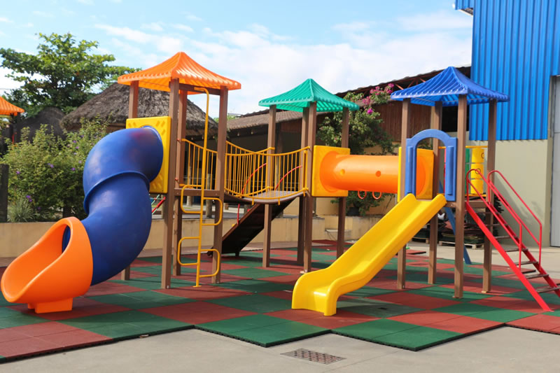

Quando ainda éramos uma pequena escola na cidade de Curitiba, nem imaginávamos até onde o empreendedorismo de nossos criadores, nos levaria.
O que podemos dizer é que cada ano letivo tem sido um registro do trabalho sintonizado e bem-sucedido entre docentes, discentes, corpo diretivo e pessoal técnico-administrativo.
Todas as áreas do conhecimento humano e exatas são tratadas com muita competência e profissionalismo, por isso, tenha a certeza de que nossos professores lhes darão todo suporte necessário para todos conseguirem a tão sonhada aprovação na universidade em que desejam.
A Pesquisa do Ensino Infantil, o qual vem preparando crianças e pré-adolescentes em busca de conhecimentos para se dar bem no futuro, ajudando-os desde pequenos à escolherem a carreira deles na sua futura profissão, também alcançando boas notas no vestibular.
Cada qual com seus objetivos e profissões que desejam seguir.
Somos fortes nesse quesito, investimos permanentemente em programas de ensinos específicos nesta formação, ajudamos vocês à dar os primeiros passos para uma boa educação, um bom conhecimento e preparação da escolha da sua profissão, com o intuito de prepará-los para a vida.
A Extensão, forma o Ensino Infantil. Vista no seu sentido estrito, podemos entendê-la como o braço do nosso colégio, aquele setor acadêmico que promove diversas atividades para as crianças, aulas de curta duração, diversas matérias e palestras.
Assim também ocorre quando a escola se propõe a oferecer serviços de extrema importância à população, realizando a integração entre teoria e prática. É o caso dos playgrounds, sala de jogos, cinema, laboratórios e experiências únicas que em ações afirmativas levam serviços de excelente qualidade ao seu resultado na educação.
Enfim, quanto mais nós desenvolvemos o nosso ensino, mais evolui a Escola, pois são atores em um processo dinâmico de estímulos e respostas às demandas em resultados de seus conhecimentos.